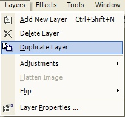

Duplicate Layer Operation
|
 The Duplicate Layer Operation, found in Layers->Duplicate Layer, makes an exact copy of the currently selected layer. All properties of the layer (such as transparency and blending mode) along with the graphical contents of the layer will be duplicated. The new layer will have the same name as the original layer. This name, along with other layer properties, can be changed by using the Layer Properties window. |